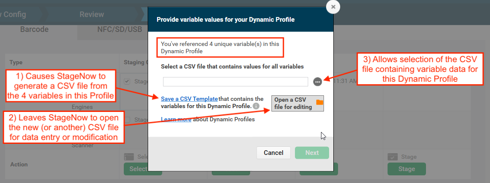
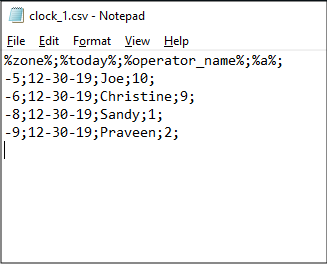
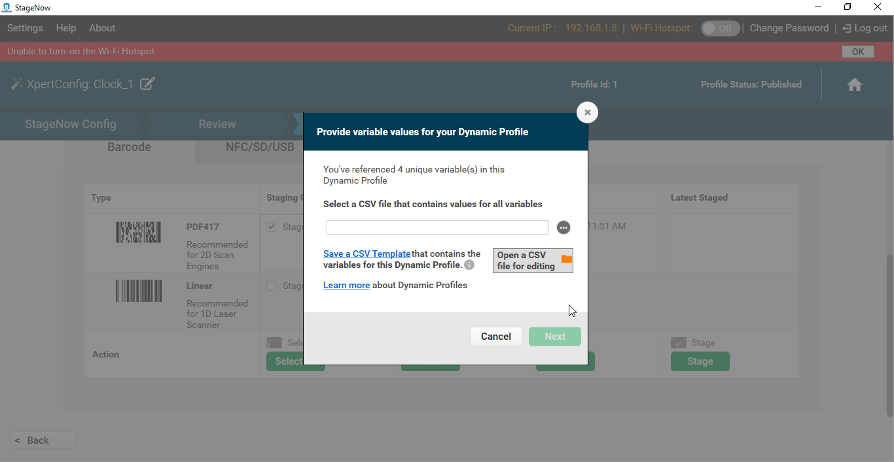
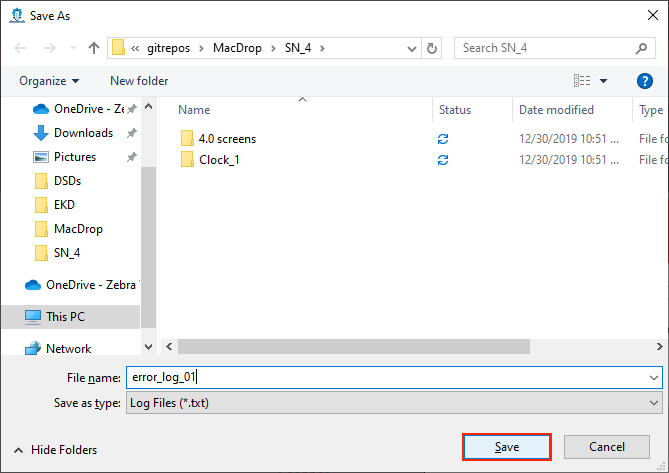
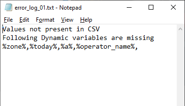

概要
StageNow 4.1 以降では動的ステージングがサポートされています。動的ステージングによって、ステージング バーコード (または .bin ファイル) の生成時に、StageNow プロファイルで互換性のあるデータ入力フィールドにファイルの値を入力することが可能になります。これにより、ステージング管理者が 1 つのプロファイルから多数のバーコードを作成できるようになります。それぞれのバーコードで、デバイスのさまざまな使用方法や使用場所に応じてデバイスを個別に設定できます。また動的ステージングでは、USB ストレージや SD カード ストレージからデバイスをステージングするために使用する .bin ファイルもサポートしています。
動的ステージングでは、次の条件に基づいてステージングを簡略化します。
- ロケール
- Language
- 入力方式
- Wi-Fi 設定
- ユーザー資格情報
- お客様ごとに異なるその他の条件
注:
- 動的ステージングを有効または無効にできるのは、StageNow 4.1.1 以降のみです。デフォルトでは無効ですので、[グローバル設定] で有効にしてください。
- StageNow 4.1.1 にアップグレードできるのは次のバージョンのみです。
- StageNow 4.1.0 (Zebra サポート ポータルでは v4.1.1 に置き換えられます)
- StageNow 4.0.1
- StageNow 3.4.0
- 動的ステージングを使用している場合、[StageNow FTP サーバーの外部に導入パッケージをホスト] オプションは使用できません。
要件
- StageNow 4.1 以降がインストールされている
- 動的に入力するフィールドとそれに対応する変数名の知識
- すべての動的フィールドの変数名と一致データを含む
.csvファイル (ステージングのセットアップ時に作成可能)
変数の作成
動的ステージングの変数は、主に次の 2 通りの方法で作成されます。
データベースからの変数のエクスポート - データベースやスプレッドシート内にユーザーのデータ (ロケールやネットワーク設定など) を保有している企業が当該のデータを
.csvファイルにエクスポートし、それに応じて、エクスポート先のファイルを使用してステージングのプロファイルを生成します。既存の変数に対して StageNow プロファイルを作成する場合、プロファイルに入力された変数名がデータベースの変数名と完全に一致する必要があります。"オンザフライ" での変数の生成 - ユーザー データベースを保有しない (またはこの目的で使用しない) 企業の場合、動的プロファイルを作成する際に変数名を作成できます。プロファイルが終了すると、StageNow で、新しく作成されたすべての変数を含む
.csv形式のテンプレート ファイルが生成されます。このファイルに、管理者が必要なデータを入力することができます。変数名を自動出力すると自動出力特有の精度で出力されるため、Zebra ではこの方法を.csvファイルを作成する方法として推奨しています。
これらの手法はいずれも StageNow で完全にサポートされています。手法については「動的ステージングの使用」セクションで説明しています。
動的ステージングは、さまざまな面で時間の節約に役立ちます。たとえば、デバイスを中央の拠点に構成し、全米の支社に展開する企業では、事業所ごとに 1 つの .csv ファイルを保持することができます。このファイルそれぞれに、各事業所の部門のデバイスのデータと必要なデバイス設定が入ります。具体的に説明すると、「事業所 1」に 10 の部門がある場合、Store_1.csv ファイルには 11 行が含まれることになります。1 行目には変数名が含まれている必要があります。それ以降の 10 行が部門用で、各行に部門の変数の設定が含まれます。すべての部門に共通する変数名としては、次のようなものがあります。
%dept_name%%ssid%%wifi_passphrase%%default_scanner%%app_1%%app_2%%app_3%
動的ステージングの使用
変数の使用に関するルール
- 起こりうるエラーを回避するため、動的ステージングの実行時は
.csvファイルを絶対に開かないでください。 - StageNow プロファイルで使用される変数名は、
.csvファイル内の変数名と完全に一致する必要があります。 - 変数は単独で使用することも、同じフィールド内の静的な値やその他の変数と組み合わせて使用することもできます。
.csvファイル内の各行は、動的プロファイルの 1 セットのデータを表します。.csvファイル内の行番号は、識別用のバーコードを出力するために使用します。- 動的ステージングでは、入力専用のプレーン テキスト ファイルのみがサポートされます。
- 各変数はセミコロン (;) で区切る必要があり、各行はセミコロンで終わる必要があります。
- 動的変数は、デバイス設定およびステージング オペレータの指示フィールドでのみサポートされています。
- ステージング オペレータの指示フィールドで受け付ける変数は 1 つのみです。
- 変数データの中にパーセント記号を含める場合は、最初にパーセント記号を変数として宣言する必要があります。以下の例を参照してください。
変数データとして「%」を使用する場合
StageNow では、すべての文字 (セミコロンを含む) を動的変数のフィールドのエントリとして受け入れます。ただし、パーセント記号 (%) では例外的に、「不正な変数」のエラーを回避するために特別な処理が必要となります。パーセント記号を入力フィールドのデータとして使用するには (Store_01_SS%ID のようにSSID 名の中で使用する場合など)、まずパーセント記号を変数として宣言する必要があります。
データ入力フィールドにパーセント記号 (%) を含める方法:
- 使用する
.csvファイルに、「%」を含む「%percent%」という名前の変数を、唯一の値として追加します。 - StageNow の [SSID] フィールドに、値として「Store_01_SS%percent%ID」 (例) と入力します。
- 必要に応じてバーコードを生成します。バーコードが生成されると、StageNow が「%percent%」を「%」の文字に置き換えます。この例では「Store_01_SS%ID」となります。
動的ステージングを使用する方法:
開始する前に、[グローバル設定] パネルで [動的ステージング] を有効にします。
 画像をクリックすると拡大表示され、Esc キーを押すと終了します。
画像をクリックすると拡大表示され、Esc キーを押すと終了します。
次に、動的ステージングされたフィールドを追加または有効にするプロファイルを開き、次の手順に従って操作します。
- パーセント記号のアイコンが付いたデータ入力フィールドを見つけます。
 画像をクリックすると拡大表示され、Esc キーを押すと終了します。
画像をクリックすると拡大表示され、Esc キーを押すと終了します。
- 静的テキスト (「GMT」など) や変数 (
%zone%など)、あるいはその両方を、必要な組み合わせで入力します。
 画像をクリックすると拡大表示され、Esc キーを押すと終了します。
画像をクリックすると拡大表示され、Esc キーを押すと終了します。
正しい構文を使用して変数を入力するまで、警告が表示されます。
 画像をクリックすると拡大表示され、Esc キーを押すと終了します。
画像をクリックすると拡大表示され、Esc キーを押すと終了します。
- 必要に応じてすべてのフィールドに残りの静的テキストや変数を入力し、[続行] ボタンをクリックします。
 画像をクリックすると拡大表示され、Esc キーを押すと終了します。
画像をクリックすると拡大表示され、Esc キーを押すと終了します。
- 動的プロファイルをテストするには、バーコードのタイプを選択して [テスト] ボタンをクリックします。
 画像をクリックすると拡大表示され、Esc キーを押すと終了します。
画像をクリックすると拡大表示され、Esc キーを押すと終了します。
- 次の画像のような、
.csvファイルの選択 (または作成) を要求するプロンプトが表示されます。
 既存の
既存の .csvファイルを選択するには、プロンプトをスキップして手順 6 に進みます。
プロファイルで作成された変数から "オンザフライ" で.csvファイルを作成するには、次の操作を行います。
a. 下記のダイアログで [CSV テンプレートの保存] をクリックし、プロンプトに従ってファイルに名前を付けて保存します。
b. 同じダイアログ (下記) で、[編集する CSV ファイルを開く] をクリックし、手順 a で保存したファイルに移動して開きます。
c. すべての変数のデータを (セミコロンで区切って) 入力し、ファイルを保存して閉じます。
IMPORTANT:変数名とデータを区切るにはセミコロンを使用し、各行の末尾にはセミコロンを使用します (下のメモ帳の画像を参照)。
次の画像は、正しい形式の.csvファイルを示しています。
 画像をクリックすると拡大表示され、Esc キーを押すと終了します。
- 動的プロファイルの変数データを含む
.csvファイルを選択します。
 画像をクリックすると拡大表示され、Esc キーを押すと終了します。
成功すると、以下の画像と同様に、.csvファイルの各行にバーコード シートが作成されます。
プロファイル名には、出力に識別のための行番号が付加されます。
 画像をクリックすると拡大表示され、Esc キーを押すと終了します。
画像をクリックすると拡大表示され、Esc キーを押すと終了します。
- エラーが発生した場合、手順については、以下の「トラブルシューティング」セクションを参照してください。
- テストが完了したら、[公開] をクリックします。ステージング オペレータの指示の入力を要求するプロンプトが表示されます。
必要に応じて、変数と静的テキストを組み合わせて入力します。以下に例を示します。
注: このフィールドに入力できる変数は 1 つのみです。
 画像をクリックすると拡大表示され、Esc キーを押すと終了します。
画像をクリックすると拡大表示され、Esc キーを押すと終了します。
- [今すぐ公開] をクリックしてプロセスを完了し、通常どおりステージング素材を配布します。
動的ステージングが完了します
トラブルシューティング
StageNow が、ステージング メディアを生成するためのデータを .csv ファイルから取得できない場合、動的ステージング エラーが発生します。
一般的な原因:
.csvファイルに 1 つまたは複数の変数のデータがない- StageNow で 1 つまたは複数の変数が正しく入力されていない
.csvファイルがホストのワークステーションに存在しない.csvファイルが開いているか、そうでない場合はホストのワークステーションでロックされている
注: 動的ステージングを使用している場合、[StageNow FTP サーバーの外部に導入パッケージをホスト] オプションは使用できません。
エラーの診断方法:
- StageNow で次のような [CSV の問題] メッセージが表示された場合は、[ログを保存] をクリックすると、問題のリストが生成されます。
 画像をクリックすると拡大表示され、Esc キーを押すと終了します。
画像をクリックすると拡大表示され、Esc キーを押すと終了します。
- ファイルに名前を付けて、必要な場所に保存します。画像をクリックすると拡大表示され、Esc キーを押すと終了します。
- [表示するログ ファイルを開く] ボタンをクリックし、前の手順で保存したログ ファイルに移動して開きます。
ログ ファイルの例を次に示します。 画像をクリックすると拡大表示され、Esc キーを押すと終了します。
- テキスト エディタでログを開き、必要に応じて
.csvファイルを修正します。
そして StageNow に戻り、[やり直し] ボタンをクリックします。
 画像をクリックすると拡大表示され、Esc キーを押すと終了します。
画像をクリックすると拡大表示され、Esc キーを押すと終了します。
- 前のセクションの手順 6 に戻り、動的ステージングを再試行します。